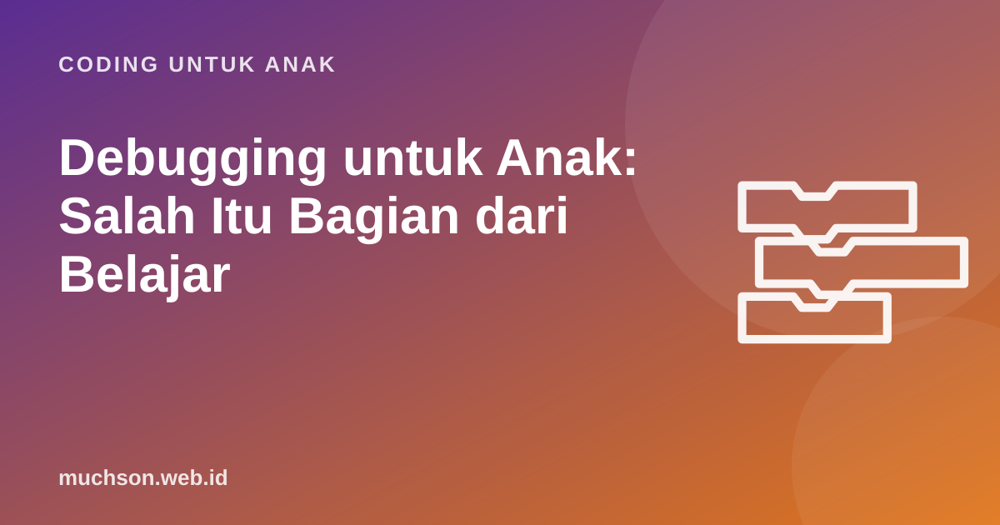

Beranda › Artikel › Coding untuk Anak
Coding untuk AnakDebugging untuk Anak: Salah Itu Bagian dari Belajar
Di sekolah, salah sering berarti nilai berkurang. Di coding, salah adalah kejadian sehari-hari yang bahkan punya nama sendiri: bug. Programmer profesional menghabiskan banyak waktunya untuk mencari dan memperbaiki bug. Bagi anak, ini kesempatan langka untuk belajar bahwa kesalahan bisa diselidiki, dipahami, dan diperbaiki, bukan disembunyikan.

Apa itu bug dan debugging?
Bug adalah kesalahan dalam program yang membuat hasilnya tidak sesuai harapan. Debugging adalah proses mencari dan memperbaikinya. Ada cerita terkenal yang bisa Anda bagikan ke anak: pada 1947, tim komputer Harvard Mark II menemukan seekor ngengat terjepit di dalam mesin. Ngengat itu ditempel di buku catatan dengan tulisan "first actual case of bug being found". Buku catatan itu kini menjadi koleksi Smithsonian National Museum of American History. Istilah "bug" untuk gangguan teknis sebenarnya sudah dipakai sebelumnya, tetapi cerita ini membuatnya populer.
Anak yang programnya error tidak sedang gagal. Ia sedang melakukan pekerjaan yang sama dengan programmer di perusahaan teknologi besar: menemukan bug.
Kenapa debugging bagus untuk karakter anak
Psikolog Carol Dweck dan rekannya meneliti bagaimana cara anak memandang kemampuan memengaruhi caranya menghadapi kesulitan. Dalam studi Mueller dan Dweck (1998), anak yang dipuji karena usahanya cenderung memilih tugas yang lebih menantang dan lebih tekun setelah gagal, dibanding anak yang dipuji karena kepintarannya. Debugging adalah latihan alami untuk pola pikir yang menghargai proses ini: anak berkali-kali mengalami "belum berhasil" yang kemudian menjadi "berhasil" berkat usahanya.
Debugging juga melatih keterampilan yang sangat praktis: membaca dengan teliti, membuat dugaan, menguji dugaan, dan bersabar. Keempatnya berguna saat mengerjakan soal matematika, mencari kesalahan tulisan, atau memperbaiki sepeda.
Lima langkah debugging yang bisa diajarkan
- Amati. Jalankan program dan jelaskan apa yang sebenarnya terjadi. "Kucingnya berjalan, tapi tidak berhenti di pohon."
- Bandingkan. Apa yang seharusnya terjadi? "Seharusnya berhenti dan berkata halo."
- Duga. Blok mana yang mungkin penyebabnya? Tunjuk dengan jari.
- Ubah satu hal. Hanya satu. Kalau mengubah tiga hal sekaligus, kita tidak tahu mana yang berhasil.
- Uji lagi. Jalankan. Kalau belum benar, kembali ke langkah 1 dengan informasi baru.
Teknik bebek karet
Programmer punya teknik bernama rubber duck debugging: menjelaskan program baris demi baris kepada bebek mainan. Sering kali, saat menjelaskan, kita menemukan sendiri kesalahannya. Untuk anak, ganti bebek dengan boneka kesayangan, atau Anda sendiri yang berperan sebagai "bebek" yang cukup mendengarkan dan mengangguk.
Latihan: temukan bug-nya
Program di bawah seharusnya membuat kucing berjalan ke kanan 5 kali, berkata "Sampai!", lalu kembali ke awal saat bendera diklik lagi. Tapi ada 2 bug. Bisakah anak Anda menemukannya?
Kalimat pendamping yang membantu (dan yang sebaiknya dihindari)
| Hindari | Coba ganti dengan |
|---|---|
| "Kok salah lagi sih?" | "Wah, ketemu bug. Ayo kita selidiki." |
| "Sini, Mama saja yang betulkan." | "Sudah coba apa saja? Blok mana yang kamu curigai?" |
| "Kamu memang pintar!" (setelah berhasil) | "Kamu sabar mencoba sampai ketemu. Itu keren." |
| "Ini kan gampang." | "Bagian ini memang tricky. Pelan-pelan ya." |
| "Ya sudah, berhenti dulu kalau tidak bisa." | "Mau istirahat 5 menit lalu kita lihat lagi dengan mata segar?" |
Kalau anak mulai menangis atau marah, berhenti sejenak itu boleh. Frustrasi yang terlalu besar tidak membuat belajar lebih baik. Kembali setelah tenang, dan mulai dari bagian kecil yang pasti bisa ia selesaikan.
Membangun kebiasaan menguji
Cara terbaik mengurangi bug adalah menguji sedikit demi sedikit. Ajarkan kebiasaan "susun sedikit, jalankan, cek" sejak awal. Anak yang menyusun 30 blok lalu baru menjalankan programnya akan kesulitan menemukan bug. Anak yang menjalankan program setiap 3-4 blok tambahan akan langsung tahu blok mana yang bermasalah.
Di kelas yang baik, alat bantu juga berperan. PixelKode, misalnya, punya debugger Robo yang menjalankan program langkah demi langkah dan menyorot blok yang sedang berjalan, plus petunjuk bertahap yang tidak langsung membocorkan jawaban. Tujuannya sama dengan semua saran di artikel ini: anak menemukan sendiri, bukan diberi tahu.
Tanya jawab
Apa arti debugging untuk anak?
Bagaimana jika anak mudah menyerah saat programnya error?
Apakah orang tua harus bisa coding untuk membantu debugging?
Kenapa disebut bug?
Sumber dan bacaan lanjut
- Mueller, C. M., & Dweck, C. S. (1998). Praise for intelligence can undermine children's motivation and performance
- Smithsonian National Museum of American History: Log book with computer bug
- Brennan & Resnick (2012). Praktik menguji dan memperbaiki (testing and debugging)
- Scratch untuk pendidik